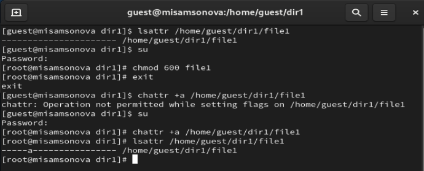
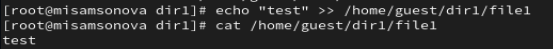
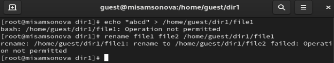
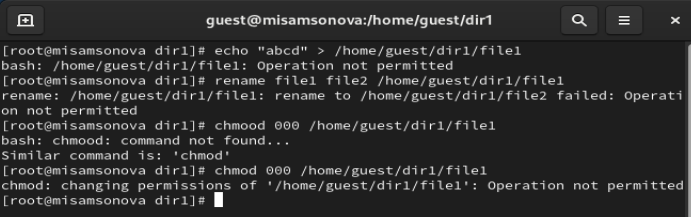
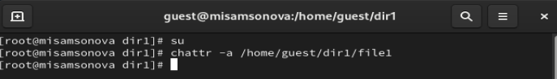
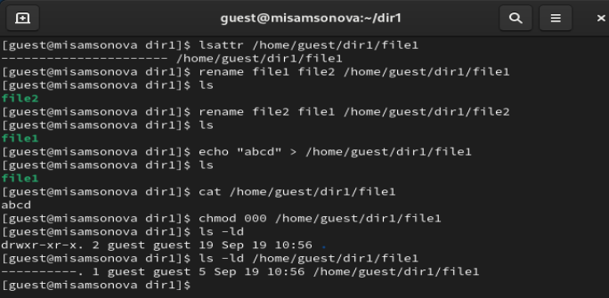
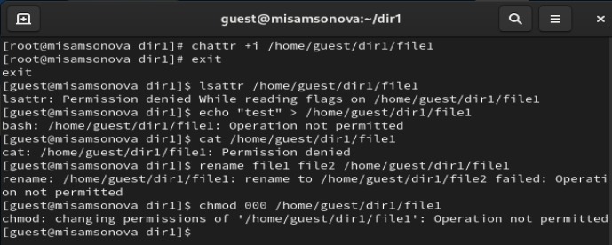

Дискреционное разграничение прав в Linux.
Расширенные атрибуты
Самсонова Мария Ильинична
НФИбд-02-21
Студ. билет: 1032216526
2024
Теоретическое введение
Права доступа определяют, какие действия конкретный
пользователь может или не может совершать с определенным файлами и
каталогами. С помощью разрешений можно создать надежную среду — такую, в
которой никто не может поменять содержимое ваших документов или
повредить системные файлы. [1]
Расширенные атрибуты файлов Linux представляют собой
пары имя:значение, которые постоянно связаны с файлами и каталогами,
подобно тому как строки окружения связаны с процессом. Атрибут может
быть определён или не определён. Если он определён, то его значение
может быть или пустым, или не пустым. [2]
Расширенные атрибуты дополняют обычные атрибуты, которые связаны со
всеми inode в файловой системе (т. е., данные stat(2)). Часто они
используются для предоставления дополнительных возможностей файловой
системы, например, дополнительные возможности безопасности, такие как
списки контроля доступа (ACL), могут быть реализованы через расширенные
атрибуты. [3]
Цель работы
Получение практических навыков работы в консоли с расширенными
атрибутами файлов.
Выполнение
лабораторной работы. 1-5 пункты
От имени пользователя guest определите расширенные атрибуты файла
/home/guest/dir1/file1 командой “lsattr /home/guest/dir1/file1”.
Установите командой “chmod 600 file1” на файл file1 права,
разрешающие чтение и запись для владельца файла.
Попробуйте установить на файл /home/guest/dir1/file1 расширенный
атрибут a от имени пользователя guest “chattr +a
/home/guest/dir1/file1”. В ответ вы должны получить отказ от выполнения
операции.
Зайдите на третью консоль с правами администратора либо повысьте
свои права с помощью команды su. Попробуйте установить расширенный
атрибут a на файл /home/guest/dir1/file1 от имени суперпользователя:
“chattr +a /home/guest/dir1/file1”
От пользователя guest проверьте правильность установления атрибута:
“lsattr /home/guest/dir1/file1”
Выполнение
лабораторной работы. 1-5 пункты

(рис. 1. 1-4 пункты задания
лабораторной)
Выполнение лабораторной
работы. 6 пункт
Выполните дозапись в файл file1 слова «test» командой “echo”test”
/home/guest/dir1/file1”. После этого выполните чтение файла file1
командой “cat /home/guest/dir1/file1”. Убедитесь, что слово test было
успешно записано в file1.

(рис. 2. 6 пункт задания
лабораторной)
Выполнение лабораторной
работы. 7 пункт
Попробуйте удалить файл file1 либо стереть имеющуюся в нём
информацию командой echo “abcd” > /home/guest/dirl/file1 Попробуйте
переименовать файл.

(рис. 3. 7 пункт задания
лабораторной)
Выполнение лабораторной
работы. 8 пункт
Попробуйте с помощью команды chmod 000 file1 установить на файл
file1 права, например, запрещающие чтение и запись для владельца файла.
Удалось ли вам успешно выполнить указанные команды? Нет, не
удалось.

(рис. 4. 8 пункт задания
лабораторной)
Выполнение лабораторной
работы. 9 пункт
Снимите расширенный атрибут a с файла /home/guest/dirl/file1 от
имени суперпользователя командой chattr -a /home/guest/dir1/file1
Повторите операции, которые вам ранее не удавалось выполнить. Ваши
наблюдения занесите в отчёт. Всё удалось выполнить.

(рис. 5. 9 пункт задания
лабораторной)
Выполнение
лабораторной работы. 9 пункт

(рис. 6. 9 пункт задания
лабораторной)
Выполнение
лабораторной работы. 10 пункт
Повторите ваши действия по шагам, заменив атрибут «a» атрибутом «i».
Удалось ли вам дозаписать информацию в файл? Ваши наблюдения занесите в
отчёт. Нет, не удалось.

(рис. 7. 10 пункт задания
лабораторной)
Вывод
В ходе данной лабораторной работы были получены практические навыки
работы работы в консоли с расширенными атрибутами файлов.
Список литературы.
Библиография
[1] Права доступа:
https://codechick.io/tutorials/unix-linux/unix-linux-permissions